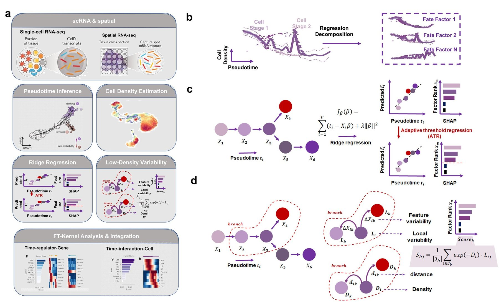
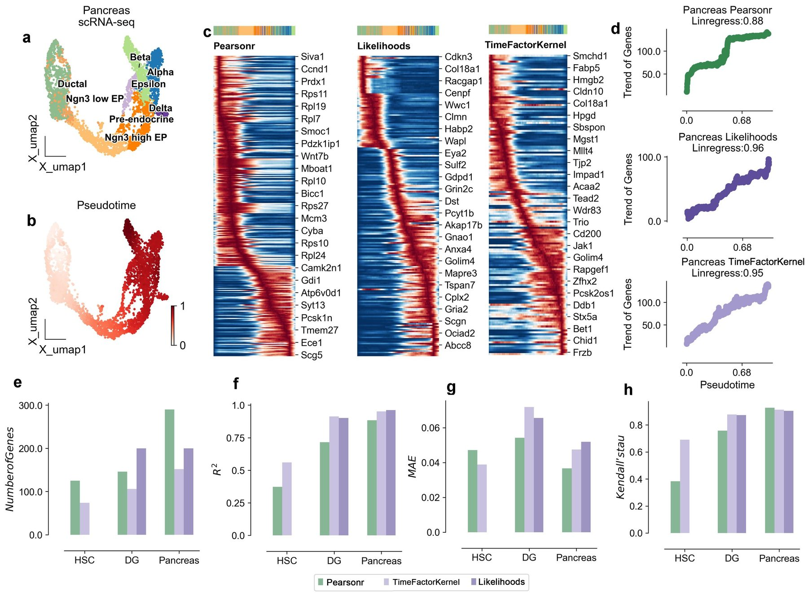
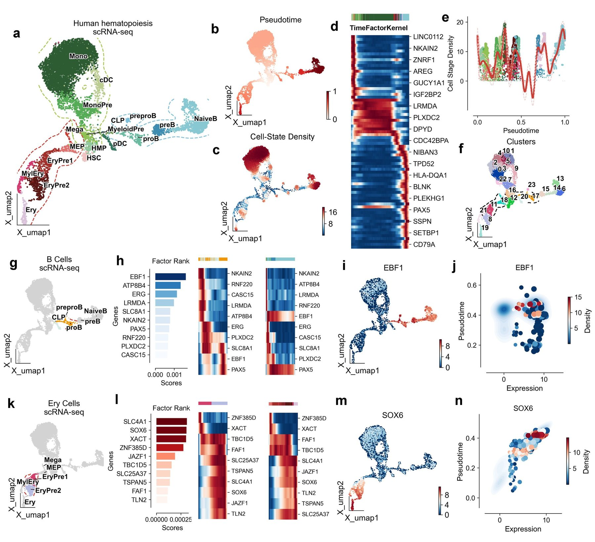
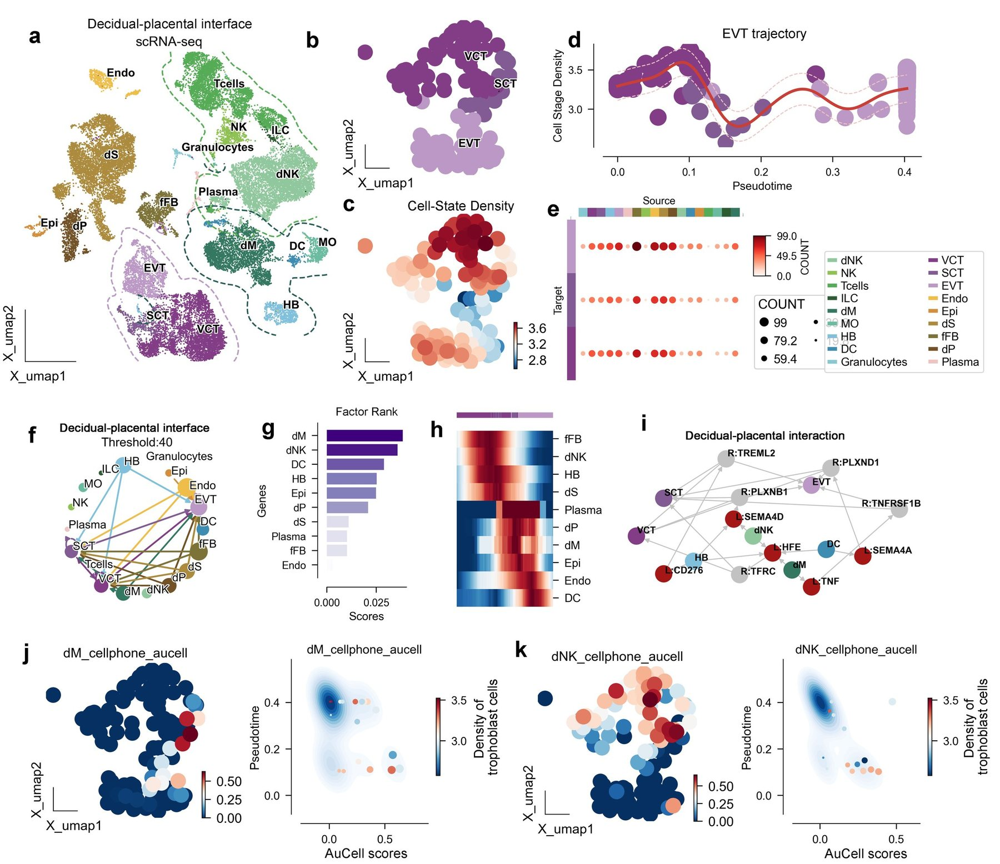
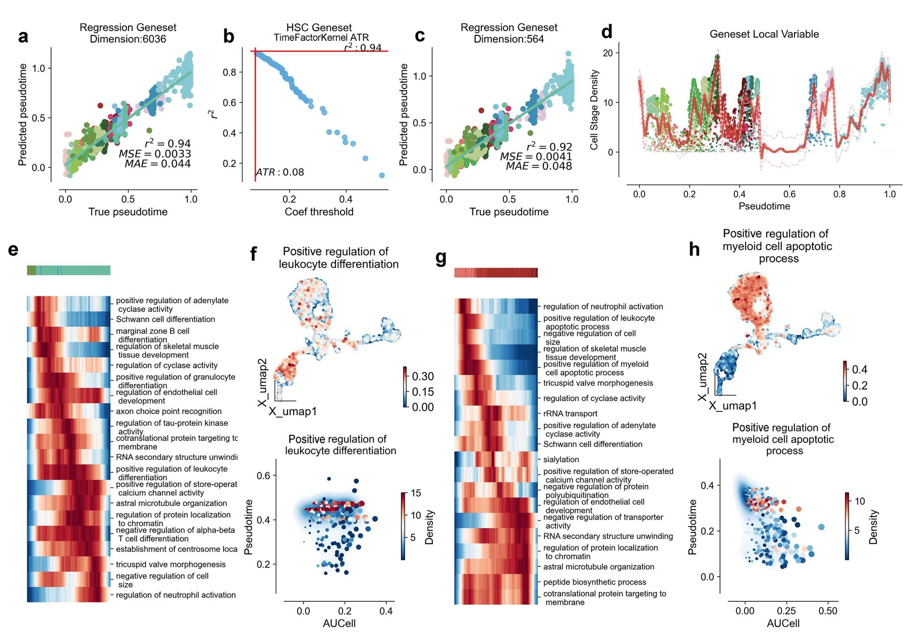
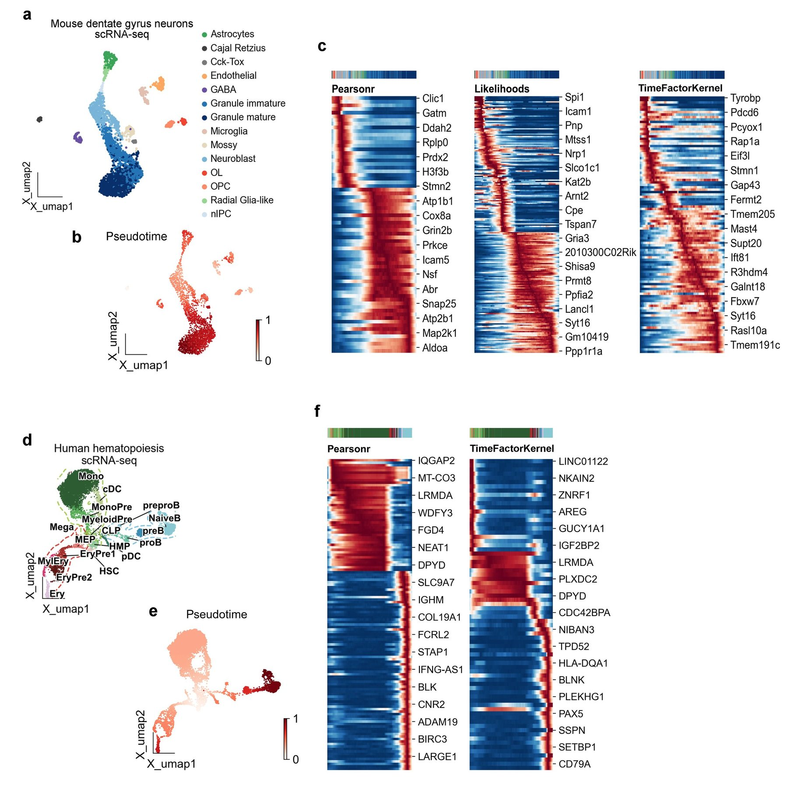
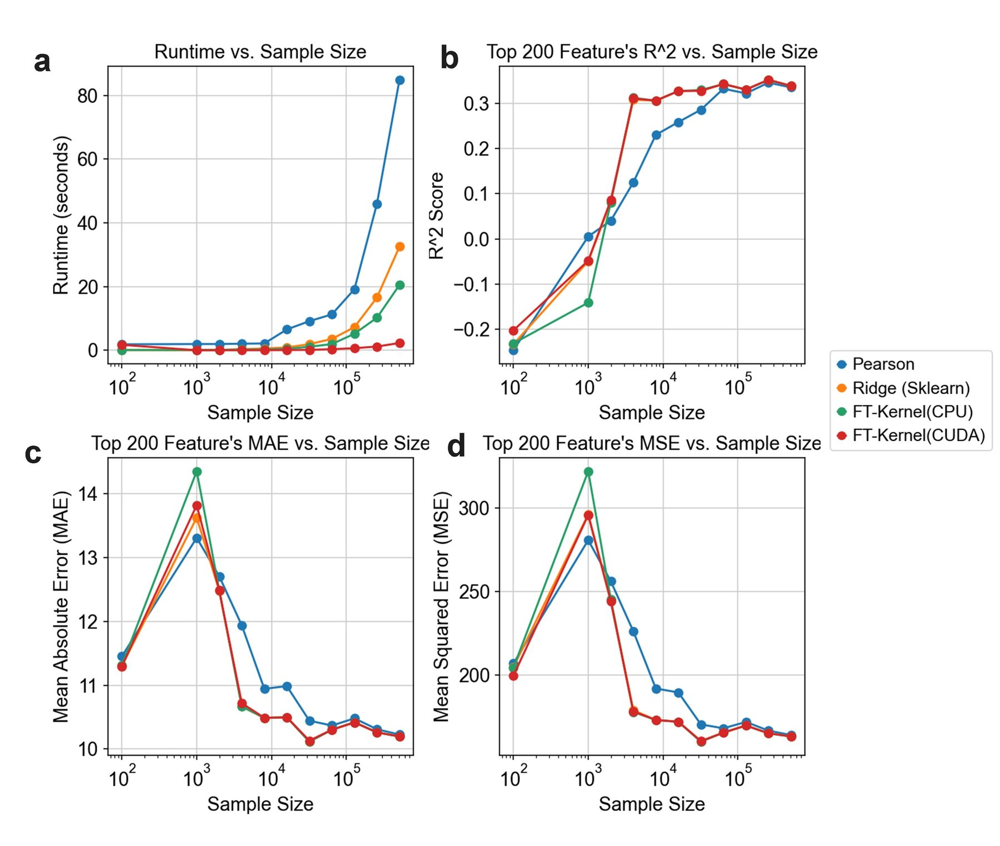

FT-Kernel: An innovative kernel for decoding cellular secrets related time
Affiliations
- 1 Daxing Research Institute, University of Science and Technology Beijing, Beijing 100083, China
- 2 School of Chemistry and Biological Engineering, University of Science and Technology Beijing, Beijing 100083, China
- 3 Center of Precision Medicine and Healthcare, Tsinghua-Berkeley Shenzhen Institute, Shenzhen, Guangdong Province 518055, China
- 4 Institute of Biopharmaceutics and Health Engineering, Tsinghua Shenzhen International Graduate School, Shenzhen, Guangdong Province 518055, China
- 5 These authors contributed equally to this work
OmicVerse Technical Reports (2026)Cite this article
Download PDFAbstract
The cell fate participants characterization based on single-cell RNA sequencing (scRNA-seq) data greatly facilitates the mechanism understandings of cellular differentiation. However, inferring these fate factors dynamics along the pseudotime is challenging. Based on cell-state density and pseudotime regression weights, we present an algorithm TimeFactorKernel (FT-Kernel), to predict the key cell fate factors, not only the minimum lineage transition genes, but also the related genesets/pathways, and cellular interaction dynamics along the pseudotime. By extrapolating the pseudotime-related key genes from spectral data as a pseudotime-kernel, FT-Kernel outperformed previous methods. Beyond time-related genes, FT-Kernel offered a comprehensive analysis of the inferred cellular interactions dynamics and lineage pathways dynamics along the pseudotime, which were limited in other methods. Additionally, it facilitated time-related fate factors prediction across various data modalities. Our work developed an important pseudotime-kernel in predicting the fate factors, and provided insights into the cellular hierarchies during development.
- Cell fate factors
- cell-state density
- pseudotime-related genes
- cellular interactions
- lineage pathways
- scRNA-seq
Introduction
Differentiation is the process by which cells develop into different types, and it's essential for the growth and function of all multicellular organisms1. Understanding the regulators that control this process is crucial for grasping how development works and what goes wrong in diseases2,3. With the development of single-cell RNA sequencing (scRNA-seq), scientists can now use methods like cell trajectory analysis and cell-state density estimation to study how cells change over time4,5. These methods use data from individual cells to classify them into different developmental paths, calculate a timeline called pseudotime6, and identify where cells are along their pathway. By analyzing pseudotime, we can track how gene expression changes during development and understand the dynamics of these biological processes7–9.
Traditional methods often focus only on the relationship between pseudotime and gene expression when identifying genes that define cell lineages10–14. However, the density information of cell states was usually ignored, which means the complex dynamics within the cell population was thereby missed out. Cell-state density is defined as the local probability density of cells along pseudotime trajectories, computed via Mellon's Poisson point process7. Transitional states (e.g., branching points) correspond to low-density regions (density < 0.5×max lineage density; see Methods)15,16. When a cell type changes, it moves from high-density to low-density and back to high-density areas17,18. This pattern shows how cell states change dynamically in populations. Genes that change significantly between low and high-density states are often linked to cell transformations, but these changes don't follow a simple timeline7. Additionally, gene activity doesn't always follow a straight path and gene expressions are often linked, these methods mainly find genes active at the initiate and terminal states with skewness of pseudotime. As a result, they might miss genes that play roles in the middle state of these processes.
Unlike existing tools (e.g., Monocle, Slingshot) that rely on Pearson correlation, FT-Kernel uniquely integrates cell-state density weighting with ridge regression to prioritize transitional-state genes. This dual integration represents the first method to bridge density dynamics with pseudotime analysis. Rather than employing traditional correlation kernels, we apply a regression approach to identify key differentiate factors with time-dynamics for specific lineages through shifts in cell-state density. Given the multicollinearity among factors, we employ ridge regression as the underlying model. Additionally, our inputs are compatible with all commercially available models of proposed temporal sequencing algorithms, fully leveraging the potential of various models to ensure compatibility with scRNA-seq generated by different techniques.
In this study, we commence by demonstrating FT-Kernel’s efficacy in identifying cell-state density lineage transition genes involved in human hematopoiesis and mouse dentate gyrus neuron developmental processes. Subsequently, by applying FT-Kernel to the decidua-placenta interface dataset, it can identify critical cellular interactions during lineage transitions in trophoblast development. Additionally, FT-Kernel could identify cell-state density lineage transition pathways in hematopoiesis. Our results indicate that FT-Kernel provides a novel perspective on the study of genealogical developmental determinant genes/gene sets. FT-Kernel is available as an open-source package at https://github.com/Starlitnightly/TimeFactorKernel.
Results
The FT-Kernel modeling approach
To precisely identify the lineage transition genes related to cell-state density from high-dimensional single-cell phenotypic landscapes, we set to decompose these landscapes into different lineages driven by a series of factors based on the pseudotime and cell-state density (Fig. 1a). Here are two main challenges need to be addressed: 1) First, calculating the gene variability from the cells in low-density regions. Cells in low-density areas often represent rare or transitional states that are biologically important. Traditional methods tend to overlook the changed genes of cells in low-density regions. 2) The second challenge is reducing noise. While linear regression can calculate weights for all genes, analyzing all genes can introduce noise. FT-Kernel addresses this by using a technique called ridge regression to identify important genes (Fig. 1b).
In this study, the calculations for time-related genes (Fig. 1b) and low-density regions (Fig. 1c) are done independently. For identifying time-related genes, we recommend using the pseudotime of all cells within a lineage to build the ridge regression model (Fig. 1b). To find a minimal set of genes necessary for accurate analysis, FT-Kernel uses a method called adaptive threshold regression (ATR), to acquire the minimum set of genes by progressively narrowing down the shapley additive explanations (SHAP) value, providing a clear view of the essential fate factors for cell lineages development (Fig. 1b).
For calculating low-density regions of cells (Fig. 1c), we introduced the Mellon method7. We first calculate the distance from each cell to its nearest neighbor and use a Poisson point process to relate this distance to local density. Higher density areas correspond to closer neighbor distributions, while narrower density areas have wider distributions. With this density pattern, Branch selection follows a biologically informed heuristic approach: (1) Perform Leiden clustering on all cells. (2) Manually select clusters spanning transitional states (e.g., clusters containing both progenitor and differentiated cells). (3) Validate branches by ensuring they include branching origins (cells shared by multiple lineages). This process balances biological interpretability with computational simplicity. If we only use pseudotime from the pre-developmental branch, we might find more "local time-related genes," but these could also show "local temporal" characteristics elsewhere in the lineage. FT-Kernel then calculates the variability of each gene in each cell within these branches and weighted sums them with time-related genes all to get the overall variability within the branch.
Interestingly, FT-Kernel can measure not only genes within a lineage along the pseudotime, but also the gene sets within a lineage, cellular interactions, and lineage determined pathways, which analyses are not compatible with velocity-processed datasets. This means that FT-Kernel can reveal these time-relate factors at the micro level, from lineage transition genes, lineage pathways, to the cellular interactions, in addition to the temporal nature of cellular regulation and function at the overall level.

Kernel benchmarking of genetic algorithms with different pseudotime correlations
To benchmark FT-Kernel against previous methods for identifying pseudotime-related genes, we first examined three test dataset commonly used in pseudotime analysis, the mouse pancreas developmental data (Fig. 1), mouse dentate gyrus neuron (DG) developmental data (Fig. S1a-c), and human hematopoietic stem cells (HSC) developmental data (Fig. S1d-f). To obtain the pseudotime, for velocity-based data, we used dynamic model scVelo to compute latent time as pseudotime (Fig. 1b and Fig. S1b); and for data not based on velocity, we used palantir to compute pseudotime (Fig. S1e). Then we used the pancreatic differentiation profiles in mice to compare three models, the traditional Pearson correlation coefficient (Pearsonr), Gene Likelihoods (only available for velocity-based data), and FT-Kernel (Fig. 2c-h). We found that the pseudotime-related genes identified by Pearsonr exhibited a clear distribution skewness for pseudotime distribution of only maxima or minima without median, while those identified by Gene Likelihood and FT-Kernel showed a continuous distribution along the pseudotime and no pseudotime distribution skewness, which means the sorting growth of pseudotime is linear, not jumpy (Fig. 2c, Fig. S1c, and Fig. S1f). Following benchmarking standards in pseudotime analysis19, we selected R² for regression accuracy and Kendall’s τ for temporal ordering consistency. Furthermore, we used the regression coefficient of determination to characterize the temporal distribution of pseudotime-related genes found by these different models (Fig. 2d). The Pearsonr model had the lowest regressivity with a coefficient of 0.88, while FT-Kernel reached a similar level as Gene Likelihoods. Note that FT-Kernel and Pearsonr can model any arbitrary pseudotimes datasets, whereas Gene Likelihoods is limited to scVelo's dynamic model. To comprehensively evaluate the performance of FT-Kernel in identifying pseudotime-related genes, we selected a panel of metrics encompassing different aspects of performance. Number of Genes was chosen to assess the model's ability to identify a minimal set of genes, reflecting a balance between capturing temporal dynamics and minimizing noise and experimental cost. R-squared (R²) and Mean Absolute Error (MAE) were used to evaluate the regression accuracy of pseudotime prediction using the identified gene sets, ensuring that the selected genes retain pseudotime information comparable to traditional methods like Pearson correlation. Kendall's tau was included to measure the temporal ordering consistency of the identified genes, reflecting the model's ability to capture the temporal progression of gene expression. Furthermore, we introduced Linregress slope as a novel metric to assess the linearity of gene expression changes along pseudotime, addressing the limitations of Pearson correlation in capturing genes active in intermediate states.
Next, we further used the other three metrics to assess how FT-Kernel differs from other models on different data. We first examined Number of Genes, a common metric for evaluating the discovery of pseudotime-related genes; a larger number of genes implies the introduction of more timing-independent noise. For the mentioned HSC, DG, and Pancreas datasets, FT-Kernel identified the fewest Number of Genes (Fig. 2e, since HSC datasets were not computed by scVelo, Gene Likelihoods could not apply on HSC datasets), but these genes retained the characteristics of temporal regression (Fig. 2d). We then evaluated the coefficient of determination (R²) and Mean Absolute Error (MAE), which are regression metric for assessing pseudotime-related genes. We performed linear regression modeling using the pseudotime-related genes identified by the models and evaluated the ratio of the variance of the explanatory variables of the proposed time series predicted by the regression model to the true time series. For the HSC, DG, and Pancreas datasets, the R² of FT-Kernel was similar to that of Gene Likelihoods and significantly higher than that of Pearsonr (Fig. 2f). Additionally, the MAE did not exceed an error of 0.01 across the three models (Fig. 2g). We also assessed Kendall's tau, a metric for the temporal ranking of pseudotime-related genes. We calculated the mean position of each cell with greater than 80% gene expression and measured that position (see Methods for details), which in turn evaluates the consistency of the cell's high-temporal mean position with the actual. FT-Kernel and Gene Likelihoods exhibited the highest concordance of cellular temporal ordering of genes (Fig. 2h). Considering the limitation of Gene Likelihoods in analyzing the non-velocity-based datasets, FT-Kernel can apply to arbitrary pseudotimes datasets, and exhibit a well performance as Gene Likelihoods.

FT-Kernel resolves cellular development density lineage transition genes
Considering FT-Kernel has found the fewest pseudotime-related genes, we set to examine whether these genes are closely linked to the fate of genealogical development. We first explored the potential of FT-Kernel using human hematopoietic stem cell (HSC) differentiation lineage data. This dataset was divided into three different differentiation directions, B-cell fate profiles, erythroid fate profiles, and monocyte fate profiles (Fig. 3a). We calculated pseudotime using Palantir and cell-state density using mellon (Fig. 3b-3c). FT-Kernel captures pseudotime-related genes across the entire spectrum of HSC fates (Fig. 3d), especially in the median pseudotime region with lowest cell-state density (Fig. 3e). We also used Leiden unsupervised clustering method, identifying 23 cell clusters within the entire HSC fate lineage (Fig. 3f).
For the B-cell differentiation lineage, we selected the clusters ‘17, 20, 23’ with the lowest average timings for the prediction of fate factors in early lineage development (Fig. 3g). FT-Kernel identified 10 regulatory genes within the early lineage based on cell-state density transition, among which EBF1, a major regulator of B-cell development20, was ranked highest by FT-Kernel and showed a clear shift in the early lineage (left panel of Fig. 3h). Although a two-wave expression of EBF1 was shown along the pseudotime of the Leiden unsupervised clusters (middle panel of Fig. 3h), in the overall B cell lineage, EBF1's expression peak in low-density regions aligns with its known role in destabilizing B-cell progenitors20 (right panel of Fig. 3h, Fig. 3i). Notably, the high-expression levels of EBF1 with low-pseudotime regions corresponded to the cells with lower cell-state density (Fig. 3j), indicating that a transitional role of EBF1 expressed in the lower cell-state density for the B-cell lineage differentiation. ATP8B4 is a myeloid-specific flippase21, and past reports have suggested that the flippase ATP11C during early B-cell development22. The combination of a high TM-score (0.85) and a reasonably low RMSD (2.85 Å) from the US-align analysis strongly indicates that ATP8B4 and ATP11C are structurally very similar. This structural similarity reinforces the prediction that ATP8B4 functions as a flippase, similar to ATP11C, and supports its role in myeloid cell development. In addition, EGR23 and PAX524 with early-stage shift expression were also regulators of B-cell development, further supporting the precise prediction for time-related genes by FT-Kernel.
For the erythroid differentiation lineage, we selected the clusters ‘8, 11, 18, 21’ with the lowest average timings for the prediction of fate factors in early lineage development (Fig. 3k). FT-Kernel identified 10 regulatory genes within the early lineage (left panel of Fig. 3l). The top 4 genes included the erythrocyte membrane protein SLC4A1, a major regulator of erythroid development SOX625, lncRNA XACT, and ZNF385D, in which the latter two genes exhibited a cute shift in the early lineage (Fig. 3l), suggesting a potential role during erythroid development. SOX6 showed an elegant activation in the early lineage and sustained high expression in the mid-late lineage throughout the erythroid development (Fig. 3l, 3m). Additionally, SOX6 expression regions at low pseudotime had lower cell-state density (Fig. 3n), further supporting a more precisely time-related factor prediction of FT-Kernel based on cell-state density.

Identification of lineage determined cellular interactions dynamics during trophoblast development
In addition to identifying time-related regulatory genes for lineage development, FT-Kernel can also probe regulatory cells and targets of action for lineage development. We selected the maternal-fetal interface as our study object (Fig. 4a), where trophoblast cells invade the uterus. This process is not only regulated by the trophoblast cells themselves but also significantly influenced by the microenvironment of the maternal-fetal interface. We calculated the meta-cells of the maternal-fetal interface using SEACells to reduce data sparsity and improve gene robustness, allowing us to investigate the differentiation of the trophoblast cells. The trophoblast cells were composed with three main epithelial cells: the villi cytotrophoblast (VCT), syncytiotrophoblast (SCT) and extravillous trophoblast (EVT) (Fig. 4b), which then were calculated the cell-state density of the localized trophoblast cells using Mellon (Fig. 4c). We found a trough region mainly composed of SCT cells during the differentiation from VCT to EVT (Fig. 4d). To understand cellular interactions at the maternal-fetal interface, we used CellPhoneDB to calculate interactions involving trophoblast cells as receptor cells, and found that the endothelial cells, epithelial cells, and decidual stromal cells (dS) cells exhibited the most ligand-receptor pairs with trophoblast cells (Fig. 4e-4f).
Next, we selected the uniquely paired receptor on trophoblast cells for each cell class as regulators targeting trophoblast cells. We used the AUCell scores of these receptors on trophoblast cells for modeling and as inputs to FT-Kernel. The highest fate-regulated cells identified by FT-Kernel were decidual macrophages (dM) and decidual nature killer cells (dNK) (Fig. 4g). The dM and dNK regulatory time points were located at mid-late (during VCT-SCT-EVT transition) and early (within VCT) stages of trophoblast differentiation, respectively (Fig. 4h). For dM, they mainly target the receptors TFRC and TNFRSF1B on trophoblast cells via HFE and TNF (Fig. 4i). Trophoblast cells with high AUCell scores interacting with dM cells are predominantly located in the SCT region (left panel of Fig. 4j), and the density of trophoblast cells is located in an intermediate state in the region with high AUCell scores and low temporal order (Fig. 4j). For dNK, they target receptors TFRC and PLXNB1 on trophoblast cells via HFE and SEMA4D (Fig. 4i). Areas with high AUCell scores for dNK are mainly located in the VCT and early SCT, with trophoblast cell-state density also in an intermediate state in high AUCell scores and low temporal order regions (Fig. 4k). Interestingly, the developmental effects of dNK and dM on trophoblast cells have been previously reported27. Our algorithm revealed the critical regulatory dynamics of dNK and dM on trophoblast cell development from a data perspective.

Identification of pathways dynamics during lineage determined process in hematopoiesis
Finally, we demonstrate the ability of FT-Kernel in recognizing pseudotime-related functions, which in past studies have generally been identified using Pearsonr, followed by pathway enrichment of the pseudotime-related genes. This method relies on pseudotime-related genes and assumes that these genes do not overlap across different temporal modules. However, developmental processes may have a continuous role for a particular gene, such as the B-cell lineage regulator PAX5 identified before (Fig. 3h), suggesting that we should quantify the genesets/pathways as a whole.
We still selected human hematopoietic stem cell (HSC) lineage and used Biological Process from Gene Ontology as a pathway database. We used AUCell to score 6036 genesets for all cells from HSC. We then modeled ridge regression on pseudotime using these 6036 genesets, achieving a regression coefficient of 0.94 (Fig. 5a). By maintaining the regression cell fluctuations within ±0.02, we obtained the minimum genesets using FT-Kernel's ATR, comprising a total of 564 genesets (Fig. 5b-5c). We analyzed the local variability of these time-related genesets using Mellon (Fig. 5d).
Then we first assessed the temporal correlation genesets in B-cell differentiation profiles, and obtained the top 20 time-related pathways with the highest local variability based on cell-state density from the above 564 pathways (Fig. 5e). Among which we captured the positive regulation of leukocyte differentiation (GO: 1902107), with a continuous activation except the initiate and terminal stage during B-cell lineage development (Fig. 5e). The high AUCell scores distribution of the positive regulation of leukocyte differentiation mainly located in the B-cell and erythroid lineages (upper panel of Fig. 5f), and similarly, the low-pseudotime regions corresponded to the cells with lower cell-state density (bottom panel of Fig. 5f), suggesting an important role of this pathway at the early stage of B-cell lineage.
Next, we evaluated the temporal correlation genesets in the erythroid differentiation lineages and selected the top 20 pathways with the highest local variability (Fig. 5g), among which we captured positive regulation of myeloid cell apoptotic process (GO:0033034) showing a clear shift at the early stage of erythroid differentiation lineages (Fig. 5g, and upper panel of 5h), where HSC differentiate into erythrocytes through a process known as erythroid differentiation. During the differentiation of hematopoietic stem cells into erythrocytes, they initially pass through a cellular stage known as the "myeloid cell lineage". The apoptosis of myeloid lineage cells is part of the regulation of erythropoiesis and maintenance of homeostasis, the low-pseudotime regions of high AUCell scores corresponded to the cells with lower cell-state density (bottom panel of Fig. 5h), indicating an adjustment of erythroid maintenance of homeostasis at the early stage.

FT-Kernel Accurately Models Pseudotime and Elucidates Key Fate Determinants in Human Limb Bud Development
To rigorously assess the versatility and robustness of FT-Kernel, we extended its application to a recently published, spatially resolved single-cell transcriptomic atlas of human embryonic limb bud development. This intricate dataset meticulously maps cellular states in both spatial and temporal dimensions during limb morphogenesis28, providing an exceptional platform to evaluate FT-Kernel's performance in a spatially contextualized developmental process. We performed pseudotime inference and cell-state density estimation on the limb bud data, subsequently employing FT-Kernel to dissect the critical fate determinants orchestrating limb bud development.
Consistent with the original spatial annotation19 UMAP visualization of limb bud cells, colored by regional identity, distinctly demarcated spatial domains corresponding to ‘Digit’, ‘DistMes’, ‘HandPlate’, ‘IDS’, and ‘Other’ compartments (Fig. 6a). Pseudotime analysis effectively recapitulated the developmental trajectory within the limb bud, as visualized within the UMAP embedding (Fig. 6b). Cell-state density estimation further resolved transitional cellular states integral to the limb bud lineage progression (Fig. 6c). Application of FT-Kernel to this spatially resolved dataset revealed a high degree of concordance between FT-Kernel predicted pseudotime and the inferred developmental timeline, evidenced by a low Root Mean Square Error (RMSE) of 0.088 (Fig. 6g). This quantitative metric underscores FT-Kernel's accuracy in capturing the intrinsic temporal dynamics of limb bud morphogenesis.
Furthermore, FT-Kernel robustly identified a discrete set of genes significantly associated with limb bud development (Fig. 6h). To investigate the spatial relevance of these identified genes, we spatially mapped the expression patterns of COL2A1 and IRX1, two high-ranking fate determinants prioritized by FT-Kernel. Spatial coordinate plots revealed spatially complementary expression domains for COL2A1 and IRX1 (Fig. 6k, l). COL2A1, encoding collagen type II alpha 1 chain, a principal component of the cartilage extracellular matrix, exhibited pronounced expression within the ‘Digit’ region, concordant with its established and pivotal role in digit chondrogenesis and skeletal development. Conversely, IRX1, a member of the Iroquois homeobox gene family, known for its regulatory functions in limb anterior/posterior axis patterning and digit identity specification during limbogenesis, displayed elevated expression in the ‘HandPlate’ and ‘IDS’ regions bordering the ‘Digit’ domain. This spatial expression pattern of IRX1 suggests its involvement in defining the spatial boundaries of the ‘Digit’ region and modulating cell fate in adjacent compartments. Temporal expression dynamics along the FT-Kernel inferred pseudotime trajectory further delineated distinct temporal regulatory modes for these fate determinants (Fig. 6m, n). COL2A1 expression demonstrated a sustained increase along pseudotime, mirroring the progressive maturation of chondrocytes during digit development. IRX1 expression, in contrast, peaked at early pseudotime and subsequently declined, implicating a critical role in early limb bud patterning and initial fate specification events. Furthermore, we observed a clear segregation of cell stage densities along the pseudotime trajectory (Fig. 6i), reinforcing the efficacy of FT-Kernel in capturing density-dependent fate transitions during limb bud development. Fate rank analysis further prioritized genes critically involved in cellular fate determination during limbogenesis (Fig. 6j). Collectively, these findings robustly demonstrate FT-Kernel as a potent analytical tool for dissecting the intricate spatiotemporal dynamics of cell fate decisions in complex developmental processes, readily applicable to spatially resolved transcriptomics datasets.
Discussion
We have presented a new computational kernel, FT-Kernel, which effectively identifies cell-state density lineage transition factors along the pseudotime critical for cellular fate determination using scRNA-seq data. To our knowledge, FT-Kernel is the first tool to: (1) model cell-cell interaction dynamics along pseudotime (Fig. 4), and (2) integrate density-aware regression for gene selection (Fig. 2e-h). FT-Kernel overcomes significant limitations of traditional pseudotime-based gene identification methods by incorporating both temporal and density-based state transitions. Utilizing ridge regression and adaptive threshold regression (ATR), FT-Kernel isolates a minimal set of time-related genes that maintain pseudotime regression model adequacy, thus extracting the time-related fate-determining genes, cellular interactions, and genesets/pathways for the determined lineages from the cell-state density space. Furthermore, FT-Kernel is designed for scalability, making it applicable to large-scale datasets using GPU acceleration.
The selection of performance metrics was guided by the inherent challenges of pseudotime analysis and the distinctive strengths of FT-Kernel. Traditional metrics like Pearson correlation, while prevalent, exhibit limitations in capturing non-linear relationships and suffer from "maxima/minima bias" (Fig. 2c), leading to the omission of crucial transitional state genes. Our chosen metrics are designed to overcome these limitations and comprehensively evaluate FT-Kernel. R²/MAE guarantee comparable regression accuracy to traditional methods. Kendall's τ validates temporal ordering consistency. Importantly, Number of Genes and Linregress slope are novel metrics specifically designed to evaluate FT-Kernel's key innovations: the efficiency of identifying minimal gene sets and the enhanced ability to capture genes crucial for intermediate state transitions. Number of Genes reflects the model's efficiency in minimizing noise and experimental costs. Linregress slope directly addresses the limitations of Pearson correlation by specifically assessing the linearity of gene expression changes and enabling the identification of intermediate state genes often missed by traditional methods. Collectively, this metric panel provides a nuanced and robust evaluation of FT-Kernel, highlighting its advantages in deciphering the complex dynamics of cell fate determination along pseudotime.
Our study highlights the importance of cell-state density in understanding differentiation trajectories and demonstrates the potential of FT-Kernel to provide new insights into regulatory mechanisms that guide these processes along the pseudotime. We validated FT-Kernel's efficacy across various datasets, including human hematopoiesis, mouse DG neuron development, and the decidua-placenta interface. The results demonstrate that FT-Kernel can accurately identify cell-state density lineage transition genes and reveal critical cellular interactions during lineage transitions. For instance, in hematopoietic differentiation, FT-Kernel identified key regulatory genes such as EBF1 for B-cell development and SOX6 for erythroid development, showcasing its capability to pinpoint time-related genes crucial for early lineage development.
Several important future extensions for FT-Kernel are envisioned. First, while our method currently focuses on scRNA-seq data, it can be extended to integrate other data modalities such as scATAC-seq or spatial transcriptomics, which provide additional layers of regulatory information. Second, incorporating machine learning techniques, including deep learning, could further enhance the identification of subtle gene expression patterns and improve the robustness of our predictions. Third, expanding FT-Kernel to include more complex cellular interactions and feedback loops could provide a more comprehensive view of cellular dynamics during development. FT-Kernel Linregress scales as $O(n \log n)$ (n=cells). Benchmarks: 10k cells (1s), 100k cells (10s) on 16-core CPU. To thoroughly evaluate the practical applicability of FT-Kernel, we conducted a benchmark analysis on its scalability and computational efficiency, comparing it against other relevant algorithms (Fig. S2).
In conclusion, FT-Kernel offers a powerful and scalable tool for unraveling the complexities of cellular fate factors by integrating cell-state density and temporal dynamics. Our method not only improves the identification of key time-related regulatory genes but also provides a comprehensive framework for understanding the intricate processes governing the whole cellular developmental process. FT-Kernel is available as an open-source package, facilitating its adoption and further development by the research community.
Materials and Methods
Key resources table
| REAGENT or RESOURCE | SOURCE | IDENTIFIER |
|---|---|---|
| Deposited Data | ||
| Pancreatic endocrinogenesis scRNA-seq | Bastidas-Ponce et al. (2019)29 | GSE: GSE132188 |
| Dentate Gyrus scRNA-seq | Hochgerner et al. (2018)30 | GSE: GSE95753 |
| human T-cell-depleted bone marrow scRNA-seq | Persad, S. et al. (2023)31 | GSE: GSE200046 |
| early maternal–fetal interface scRNA-seq | Vento-Tormo, R. et al. (2018)32 | ArrayExpress: E-MTAB-6701, E-MTAB-6678 |
| human gonadal cells scRNA-seq | Garcia-Alonso, L., et al. (2022)32 | ArrayExpress: E-MTAB-10551 |
| human lung leukocytes scRNA-seq | Barnes, J.L., et al. (2023)33 | ArrayExpress: E-MTAB-11528 |
| human fetal lung epithelium scRNA-seq | He, P., et al. (2022)33 | ArrayExpress: E-MTAB-11278 |
| Software and Algorithms | ||
| Scanpy 1.8.2 | Wolf et al34. | https://github.com/scverse/scanpy |
| OmicVerse 1.6.4 | Zeng et al35. | https://github.com/Starlitnightly/omicverse |
| Scipy 1.11.4 | Virtanen et al36. | https://scipy.org/ |
| Pandas 1.5.3 | McKinney, W. et al37. | https://pandas.pydata.org/ |
| Numpy 1.23.5 | Harris, C.R. et al38. | https://numpy.org/ |
| Palantir 1.3.3 | Setty, Manu, et al10. | https://github.com/dpeerlab/Palantir |
| Mellon 1.4.3 | Otto, D.J. et al39. | https://github.com/settylab/Mellon |
| scVelo 0.3.2 | Bergen, V. et al40. | https://scvelo.readthedocs.io/ |
| Leiden 0.10.2 | Traag, V.A. et al41. | https://github.com/vtraag/leidenalg |
| CellPhoneDB 5.0.0 | L Garcia-Alonso et al32. | https://github.com/ventolab/CellphoneDB |
| UMAP 0.5.6 | McInnes, L et al42. | https://github.com/lmcinnes/umap |
| Seaborn 0.13.2 | Waskom, M.L43. | https://seaborn.pydata.org/ |
| PyComplexHeatmap 1.4. | Ding, W. et al44. | https://github.com/DingWB/PyComplexHeatmap |
| Networkx 3.3 | Hagberg, A. et al45. | https://networkx.org/ |
| Matplotlib 3.6.3 | Hunter, J.D. et al46. | https://matplotlib.org/ |
| AUCell 0.0.1 | Aibar, S. et al47. | https://scenic.aertslab.org/scenic_paper/tutorials/AUCell.html |
| GSEApy 0.10.8 | Fang, Z. et al48. | https://github.com/zqfang/GSEApy |
| Python 3.9.2 | Van Rossum and Drake49 | https://www.python.org/ |
| Other | ||
| Code | This study | https://github.com/Starlitnightly/TimeFactorKernel |
FT-Kernel Linregress algorithm
(1) Gene/Peak Representation: Let $G_{i}$ denote each gene or peak. For various gene/peak combinations within each cell, we utilize gene sets (pathways, transcription factors (TF), and their targets) or cellular interactions. In the case of gene sets, we employ AUCell to compute the fraction of each gene set, which then substitutes for the individual gene/peak $G_{i}$. For cellular interactions, CellPhoneDB is utilized to determine the receptor of the target cell. This receptor is then mapped to the gene set of the ligand cell, effectively replacing the gene/peak $G_{i}$.
(2) Model Definition: Let $\mathbf{X}$ represent the matrix of different gene/peak combinations $G_{i}$, and $\mathbf{y}$ denote the vector of proposed chronological scores of the cells. We construct a gene set-proposed chronological model using Ridge linear regression, defined by:
The loss function $L(\boldsymbol{\theta})$ for Ridge regression is given by:
Here, $\lVert \mathbf{X}\boldsymbol{\theta} - \mathbf{y} \rVert^{2}$ represents the squared errors between the predicted and actual values, and $\lVert \Gamma\boldsymbol{\theta} \rVert^{2}$ is the squared regularization term, and where $\Gamma$ is selected via 5-fold cross-validation. We define $\Gamma = \alpha\mathbf{I}$, where $\mathbf{I}$ is the identity matrix, and $\alpha$ is a regularization parameter.
(3) Weight Dynamic Decay Model: To optimize the Ridge regression models for gene/peak combinations under different weight thresholds (denoted as $\alpha$), we employ a weight dynamic decay model. This model evaluates changes in the mean squared error (MSE) of the regression coefficients and selects the target gene set combinations $\mathbf{X}_{(w > a)}$ that maintain the minimum MSE for training parameters in the Ridge regression:
(4) Parameter Calculation: Finally, we calculate the parameters $\boldsymbol{\theta}$ of the Ridge regression model, which represent the weights of the genes/peaks within the regression model. Larger weights indicate gene sets with stronger associations to the proposed chronological scores, thereby providing valuable insights into the importance of different genes/peaks in the context of temporal differentiation.
This formalized approach ensures a rigorous and systematic analysis of the gene/peak associations with chronological scores, leveraging the strengths of Ridge regression and dynamic weight adjustment to uncover critical gene sets involved in cell differentiation trajectories. More detail of FT-Kernel Linregress algorithm could be found in the supplementary pseudocode.
FT-Kernel Branch Variability algorithm
For each cell $i$, the local gene expression variability $L_{ij}$ is determined through the following steps:
(1) Neighborhood expression difference: We need to define the neighborhood $\mathcal{N}(i)$ of cell $i$, Here, $\mathcal{N}(i) = \{0, 1, \ldots, N-1\}$, and $N$ denote the neighborhood of the cell $i$. Then we compute the expression difference $\Delta X_{ikj}$ for each gene $j$ between cell $i$ and each cell $k \in \mathcal{N}(i)$:
(2) Rate of Euclidean Distance change calculation: We then Compute the Euclidean distance $d_{ik}$ of the expression differences for each pair of cells $(i,k)$:
And the rate of euclidean Distance change $R_{ikj}$ for each gene $j$ between cell $i$ and each cell $k \in \mathcal{N}(i)$:
Here, $\epsilon$ is a small positive constant to prevent division by zero, typically set to $10^{- 16}$
(3) Local Variability Calculation: The local variability $L_{ij}$ for each gene $j$ in cell $i$ is given by $L_{ij} = \max_{k \in \mathcal{N}(i)}R_{ikj}^{2}$, and the local variability matrix $L \in \mathbb{R}^{N \times G}$ is constructed.
(4) Calculation of Gene Low-Density Variability Scores in Special branch: we use mellon to calculate the density $D_{i}$ for each cell $i$, and we define the low-density weights $W$ based on the density $D$:
Then we mask $M$ to select cells of interest, $M$ denote the cell mask matrix of size $N \times B$, where $B$ represents the number of different branches or transitional states, and $M_{ib}$ is 1 if cell $i$ belongs to branch $b$, other wise 0. We then selected the special branch $b$, and use the mask $M$ to select the indices $\mathcal{I}_{b}$ of cells belonging the branch $b$. We multiply the local variability $L_{ij}$ of these cells by their corresponding weights $W_{i}$, and calculate the weighted average of the local variability for gene $j$ across all selected cells $i$:
This formula indicates that the low-density variability score $S_{bj}$ for gene $j$ in branch $b$ is the weighted average of the local variability for gene j across all cells in the branch, with weights emphasizing low-density cells. More detail of FT-Kernel Branch Variability algorithm could be found in the supplementary pseudocode.
scRNA-seq data preprocessing and analysis
For the preprocessing and analysis of single-cell RNA sequencing (scRNA-seq) data across various datasets, a standardized procedure was employed unless otherwise specified:
- Normalization: Raw counts were normalized by dividing them by the total counts per cell to adjust for differences in sequencing depth.
- Log transformation: The normalized data was multiplied by the median of total counts across cells and then log-transformed with a pseudocount of 0.1. This step aids in stabilizing variance and making the expression values more comparable between cells.
- Feature selection: The top 2500 most highly variable genes were selected from this transformed dataset, which served as input for principal component analysis (PCA) using 50 components.
- Dimensionality reduction and clustering:
- PCs were utilized as inputs for performing leiden clustering to group cells into distinct cell types or states.
- UMAP (Uniform Manifold Approximation and Projection) visualizations were created from the PCA results to provide a low-dimensional embedding of the data that captures complex relationships between cells.
- Analysis: The aforementioned procedures were carried out using the scanpy package, which offers comprehensive tools for single-cell analysis including normalization, clustering, and visualization.
- Diffusion maps computation:
- Diffusion maps were computed using the Palantir2 package with default parameters on PCs as inputs.
- These maps provide a continuous representation of cell state transitions that can reveal underlying cellular differentiation pathways or states.
- Gene expression imputation: The diffusion kernel was utilized for MAGIC8 gene expression imputation, which helps fill in missing values by leveraging the inferred cellular relationships.
- Batch correction:
- Where applicable, batch correction using Harmony with default parameters was performed to adjust for technical variations between different sequencing batches.
- Batch-corrected PCs were then used as inputs for subsequent analyses such as UMAPs, diffusion maps, and gene expression imputation to ensure that the results are not biased by technical artifacts.
This rigorous methodology ensures that the analysis of scRNA-seq data is systematic, reliable, and capable of uncovering meaningful biological insights.
Trajectory inference
To determine the pseudotime, or developmental timeline, of single-cell RNA sequencing (scRNA-seq) data from hematopoietic processes, we establish 'HSC' as the initial stage ('origin') and 'Naïve B', 'Mono', and 'Ery' as terminal stages. This hierarchical model is then utilized by palantir for pseudotime calculation.
For pancreatic and dentate gyrus data analysis, we first compute the Mu/Ms matrix from the unspliced/spliced matrix using scVelo.pp.moment, which helps in identifying the momentary states of cells. Following this, dynamic models are estimated via scVelo.tl.dynamic_model. The pseudotime is then calculated for each cell with scVelo.tl.latent_time, allowing us to construct a trajectory that represents the developmental progression across these cellular datasets.
This comprehensive approach enables a detailed understanding and mapping of cellular differentiation processes across various biological systems.
Pseudotime-related gene using pearson model
To quantify the relationship between gene expression levels and pseudotime along the trajectory of cellular development, we apply scipy.stats.pearsonr, a statistical method for assessing linear correlation between data points. A threshold of 70% of the maximum value is utilized to filter genes that are significantly correlated with pseudotime, thereby identifying those considered 'pseudotime-related' using the Pearson model.
Pseudotime-related gene using gene likelihood of dynamic model
To determine genes associated with pseudotime based on their likelihood under a dynamic model framework, we first fit all high variance genes as input data and then estimate dynamic models through scVelo. Subsequently, the gene likelihood scores for these high variance genes (HVGs) are computed.
Protein Structure Alignment Methods
In this study, we employed protein structure alignment methods to analyze the structural relationship between ATP8B4 and ATP11C proteins. The structural model of ATP8B4 was derived from the AlphaFold Protein Structure Database (AlphaFold DB), UniProtKB accession number Q8TF62, accessible via https://alphafold.ebi.ac.uk/entry/Q8TF62. The experimental structure of ATP11C was obtained from the RCSB Protein Data Bank (Research Collaboratory for Structural Bioinformatics Protein Data Bank, RCSB PDB), PDB ID 7BSP, available for download at https://www.rcsb.org/structure/7BSP.
For structural comparison, we utilized the US-align web server (https://zhanggroup.org/US-align/). US-align is a widely used tool for protein structure alignment, providing reliable assessments of structural similarity. We focused on two key metrics from the US-align output: TM-score and RMSD. TM-score provides a quantitative measure of structural topology similarity, ranging from 0 to 1, with higher values indicating greater similarity. RMSD (Root Mean Square Deviation) reflects the average spatial deviation between the two aligned structures, with lower values indicating closer structural proximity. The resulting TM-score and RMSD values were used to quantify the structural similarity between ATP8B4 and ATP11C.
Gene sets score calculated
To ascertain the score for each cell's genesets, we start by obtaining pathway genesets from the enrichr database and preparing them using the omicverse.utils.pathway_prepare function. The AUCell scores for these genesets within individual cells are then calculated utilizing omicverse.utils.geneset_aucell. It is important to note that the pseudotime of each cell in this process is derived from its expression profile as captured by single-cell RNA sequencing (scRNA-seq).
Cell-cell interaction analysis
To derive the ligand-receptor pairs for each individual cell from single-cell RNA sequencing (scRNA-seq) data, we initiate by isolating and standardizing the raw data to retain only essential information such as cell names, their types, and gene expressions, while discarding extraneous details. Subsequently, employing a statistical method tailored for cpdb_statistical_analysis, we compute the ligand-receptor pairs for each cell.
In this context, cellular receptor sets are conceptualized as a group of genes on which one cell's ligands act upon another cell. This notion parallels that of pathways but is applied specifically to inter-cellular interactions. By leveraging these receptor sets, we can pinpoint external cells that contribute to the evolution or differentiation of specific cellular lineages.
Trend of pseudotime-related Gene
We can visualize the pseudotime-related gene using heatmap, but we need to evaluate the effect of different model from the trend of pseudotime-related gene. Here, we propose a series of methods to evaluate. First, we sorted the cell along pseudotime $t$, and defined $X$ as expression matrix of $n$ gene in $m$ cells, $X \in \ \mathbb{R}^{n \times m}$. And we can define the sorted $X$ as $X_{\mathrm{sorted}} = X[:, \mathrm{argsort}(t)]$.
Next, we calculated the average index position for each gene $i$ (each row in matrix $X_{\mathrm{sorted}}$), find the indices where its expression value exceed 80% of their maximum value and calculate the average index of these positions. We have
Store all average index values for each gene into a list $A$:
Finally, we calculate the Kendall Rank Correlation coefficient $\tau$ measures the relationship between two variables. With position indices $\tau = [1, 2, \ldots, n]$, calculate using scipy.stats.kendalltau:
We also fit the relationship between $A$ and position indices $\tau$. The linear regression model can be represented as:
Where $\alpha$ is the intercept, $\beta$ is the slope, and $\epsilon$ represents error terms. The result of linear regression can be found through using scipy.stats.linregress:
Acknowledgments
Not applicable.
Funding
This work was supported by the grants from the National Natural Science Foundation of China (32300682 to C.X.), the Fundamental Research Funds for the Central Universities (FRF-TP-22-007A1 to C.X.), the Student Research Training Program (SRTP) of University of Science and Technology Beijing (202010008107 to Z.Z.).
Data and code availability
Data sets for hematopoietic stem cell differentiation are available on the Gene Expression Omnibus GSE20004650, for mouse pancreatic differentiation51 and dentate gyrus neuron differentiation30 are available from NCBI's GSE132188 and GSE95753, and for trophoblast differentiation with cell classifications and the whole-genome sequencing data are deposited at ArrayExpress, with experiment codes E-MTAB-6701 (for droplet-based data), E-MTAB-6678 (for Smart-seq2 data) and E-MTAB-7304 (for the whole-genome sequencing data). All preprocessed data presented in this study is publicly available via the tutorial of FT-Kernel in omicverse.
FT-Kernel (version: 1.0) is implemented as a Python package and is available through GitHub (https://github.com/Starlitnightly/TimeFactorKernel). Notebooks, tutorials for reproducing all figures in this study are also available through Github (https://github.com/Starlitnightly/TimeFactorKernel/tree/main/experiment).
Conflict of interests
The authors declare that they have no competing interests.
Author contributions
C.X., Y.M., and Z.Z. contributed equally. C.X. implemented the pipeline, performed the experiments, analysis, and wrote the manuscript. Z.Z. designed the algorithm of CellFateGenie, performed the benchmark test, and wrote the manuscript. Y.M. performed the cell-cell interaction and pathway analysis, Y.W. and Y.W. polished the whole manuscript and tested the TimeFactorKernel. P.Q., H.D. and Z.Z. supervised and conceived the concept of TimeFactorKernel.
References
- 1.Brunet, T., and King, N. (2017). The Origin of Animal Multicellularity and Cell Differentiation. Dev Cell 43, 124-140. 10.1016/j.devcel.2017.09.016.
- 2.Rosenbauer, F., and Tenen, D.G. (2007). Transcription factors in myeloid development: balancing differentiation with transformation. Nature Reviews Immunology 7, 105-117. 10.1038/nri2024.
- 3.Fernández, L.P., López-Márquez, A., and Santisteban, P. (2015). Thyroid transcription factors in development, differentiation and disease. Nature Reviews Endocrinology 11, 29-42. 10.1038/nrendo.2014.186.
- 4.Macaulay, I.C., Svensson, V., Labalette, C., Ferreira, L., Hamey, F., Voet, T., Teichmann, S.A., and Cvejic, A. (2016). Single-Cell RNA-Sequencing Reveals a Continuous Spectrum of Differentiation in Hematopoietic Cells. Cell Rep 14, 966-977. 10.1016/j.celrep.2015.12.082.
- 5.Chu, L.F., Leng, N., Zhang, J., Hou, Z., Mamott, D., Vereide, D.T., Choi, J., Kendziorski, C., Stewart, R., and Thomson, J.A. (2016). Single-cell RNA-seq reveals novel regulators of human embryonic stem cell differentiation to definitive endoderm. Genome Biol 17, 173. 10.1186/s13059-016-1033-x.
- 6.Tritschler, S., Büttner, M., Fischer, D.S., Lange, M., Bergen, V., Lickert, H., and Theis, F.J. (2019). Concepts and limitations for learning developmental trajectories from single cell genomics. Development 146. 10.1242/dev.170506.
- 7.Otto, D.J., Jordan, C., Dury, B., Dien, C., and Setty, M. (2024). Quantifying cell-state densities in single-cell phenotypic landscapes using Mellon. Nature Methods. 10.1038/s41592-024-02302-w.
- 8.Van den Berge, K., Roux de Bézieux, H., Street, K., Saelens, W., Cannoodt, R., Saeys, Y., Dudoit, S., and Clement, L. (2020). Trajectory-based differential expression analysis for single-cell sequencing data. Nat Commun 11, 1201. 10.1038/s41467-020-14766-3.
- 9.Lange, M., Bergen, V., Klein, M., Setty, M., Reuter, B., Bakhti, M., Lickert, H., Ansari, M., Schniering, J., Schiller, H.B., et al. (2022). CellRank for directed single-cell fate mapping. Nature Methods 19, 159-170. 10.1038/s41592-021-01346-6.
- 10.Setty, M., Kiseliovas, V., Levine, J., Gayoso, A., Mazutis, L., and Pe’er, D. (2019). Characterization of cell fate probabilities in single-cell data with Palantir. Nature Biotechnology 37, 451-460. 10.1038/s41587-019-0068-4.
- 11.Wolf, F.A., Hamey, F.K., Plass, M., Solana, J., Dahlin, J.S., Göttgens, B., Rajewsky, N., Simon, L., and Theis, F.J. (2019). PAGA: graph abstraction reconciles clustering with trajectory inference through a topology preserving map of single cells. Genome Biology 20, 59. 10.1186/s13059-019-1663-x.
- 12.Song, D., and Li, J.J. (2021). PseudotimeDE: inference of differential gene expression along cell pseudotime with well-calibrated p-values from single-cell RNA sequencing data. Genome Biology 22, 124. 10.1186/s13059-021-02341-y.
- 13.Macnair, W., Gupta, R., and Claassen, M. (2022). psupertime: supervised pseudotime analysis for time-series single-cell RNA-seq data. Bioinformatics 38, i290-i298.
- 14.Street, K., Risso, D., Fletcher, R.B., Das, D., Ngai, J., Yosef, N., Purdom, E., and Dudoit, S. (2018). Slingshot: cell lineage and pseudotime inference for single-cell transcriptomics. BMC genomics 19, 1-16.
- 15.Bendall, S.C., Davis, K.L., Amir, E.-a.D., Tadmor, M.D., Simonds, E.F., Chen, T.J., Shenfeld, D.K., Nolan, G.P., and Pe’er, D. (2014). Single-cell trajectory detection uncovers progression and regulatory coordination in human B cell development. Cell 157, 714-725.
- 16.Van Dijk, D., Sharma, R., Nainys, J., Yim, K., Kathail, P., Carr, A.J., Burdziak, C., Moon, K.R., Chaffer, C.L., and Pattabiraman, D. (2018). Recovering gene interactions from single-cell data using data diffusion. Cell 174, 716-729. e727.
- 17.Antolović, V., Lenn, T., Miermont, A., Chubb, J.R., Klein, A., and Treutlein, B. (2019). Transition state dynamics during a stochastic fate choice. Development 146.
- 18.Westbrook, E.R., Lenn, T., Chubb, J.R., and Antolović, V. (2023). Collective signalling drives rapid jumping between cell states. Development 150.
- 19.Bastidas-Ponce, A., Tritschler, S., Dony, L., Scheibner, K., Tarquis-Medina, M., Salinno, C., Schirge, S., Burtscher, I., Böttcher, A., and Theis, F.J. (2019). Comprehensive single cell mRNA profiling reveals a detailed roadmap for pancreatic endocrinogenesis. Development 146, dev173849.
- 20.Nechanitzky, R., Akbas, D., Scherer, S., Györy, I., Hoyler, T., Ramamoorthy, S., Diefenbach, A., and Grosschedl, R. (2013). Transcription factor EBF1 is essential for the maintenance of B cell identity and prevention of alternative fates in committed cells. Nature Immunology 14, 867-875. 10.1038/ni.2641.
- 21.Sakuragi, T., and Nagata, S. (2023). Regulation of phospholipid distribution in the lipid bilayer by flippases and scramblases. Nature Reviews Molecular Cell Biology 24, 576-596. 10.1038/s41580-023-00604-z.
- 22.Pang, S.H., and Nutt, S.L. (2011). B cells need their flip-flops. Immunol Cell Biol 89, 751-752. 10.1038/icb.2011.48.
- 23.Gururajan, M., Simmons, A., Dasu, T., Spear, B.T., Calulot, C., Robertson, D.A., Wiest, D.L., Monroe, J.G., and Bondada, S. (2008). Early growth response genes regulate B cell development, proliferation, and immune response. J Immunol 181, 4590-4602. 10.4049/jimmunol.181.7.4590.
- 24.Medvedovic, J., Ebert, A., Tagoh, H., and Busslinger, M. (2011). Pax5: a master regulator of B cell development and leukemogenesis. Adv Immunol 111, 179-206. 10.1016/b978-0-12-385991-4.00005-2.
- 25.Dumitriu, B., Patrick, M.R., Petschek, J.P., Cherukuri, S., Klingmuller, U., Fox, P.L., and Lefebvre, V.r. (2006). Sox6 cell-autonomously stimulates erythroid cell survival, proliferation, and terminal maturation and is thereby an important enhancer of definitive erythropoiesis during mouse development. Blood 108, 1198-1207. 10.1182/blood-2006-02-004184.
- 26.Persad, S., Choo, Z.-N., Dien, C., Sohail, N., Masilionis, I., Chaligné, R., Nawy, T., Brown, C.C., Sharma, R., Pe’er, I., and others (2023). SEACells infers transcriptional and epigenomic cellular states from si ngle-cell genomics data. Nature Biotechnology, 1-12. 10.1038/s41587-023-01716-9.
- 27.Vento-Tormo, R., Efremova, M., Botting, R.A., Turco, M.Y., Vento-Tormo, M., Meyer, K.B., Park, J.E., Stephenson, E., Polański, K., Goncalves, A., et al. (2018). Single-cell reconstruction of the early maternal-fetal interface in humans. Nature 563, 347-353. 10.1038/s41586-018-0698-6.
- 28.Zhang, B., He, P., Lawrence, J.E.G., Wang, S., Tuck, E., Williams, B.A., Roberts, K., Kleshchevnikov, V., Mamanova, L., Bolt, L., et al. (2024). A human embryonic limb cell atlas resolved in space and time. Nature 635, 668-678. 10.1038/s41586-023-06806-x.
- 29.Bastidas-Ponce, A., Tritschler, S., Dony, L., Scheibner, K., Tarquis-Medina, M., Salinno, C., Schirge, S., Burtscher, I., Böttcher, A., Theis, F.J., et al. (2019). Comprehensive single cell mRNA profiling reveals a detailed roadmap for pancreatic endocrinogenesis. Development 146, dev173849. 10.1242/dev.173849.
- 30.Hochgerner, H., Zeisel, A., Lönnerberg, P., and Linnarsson, S. Conserved properties of dentate gyrus neurogenesis across postnatal de velopment revealed by single-cell RNA sequencing. Nat Neurosci 21, 290-299. 10.1038/s41593-017-0056-2.
- 31.Persad, S., Choo, Z.N., Dien, C., Sohail, N., Masilionis, I., Chaligné, R., Nawy, T., Brown, C.C., Sharma, R., Pe'er, I., et al. (2023). SEACells infers transcriptional and epigenomic cellular states from single-cell genomics data. Nat Biotechnol 41, 1746-1757. 10.1038/s41587-023-01716-9.
- 32.Garcia-Alonso, L., Lorenzi, V., Mazzeo, C.I., Alves-Lopes, J.P., Roberts, K., Sancho-Serra, C., Engelbert, J., Marečková, M., Gruhn, W.H., Botting, R.A., et al. (2022). Single-cell roadmap of human gonadal development. Nature 607, 540-547. 10.1038/s41586-022-04918-4.
- 33.Barnes, J.L., Yoshida, M., He, P., Worlock, K.B., Lindeboom, R.G.H., Suo, C., Pett, J.P., Wilbrey-Clark, A., Dann, E., Mamanova, L., et al. Early human lung immune cell development and its role in epithelial cell fate. Science Immunology 8, eadf9988. 10.1126/sciimmunol.adf9988.
- 34.Wolf, F.A., Angerer, P., and Theis, F.J. (2018). SCANPY: large-scale single-cell gene expression data analysis. Genome Biology 19, 15. 10.1186/s13059-017-1382-0.
- 35.Zeng, Z., Ma, Y., Hu, L., Tan, B., Liu, P., Wang, Y., Xing, C., Xiong, Y., and Du, H. (2024). OmicVerse: a framework for bridging and deepening insights across bulk and single-cell sequencing. Nature Communications 15, 5983. 10.1038/s41467-024-50194-3.
- 36.Virtanen, P., Gommers, R., Oliphant, T.E., Haberland, M., Reddy, T., Cournapeau, D., Burovski, E., Peterson, P., Weckesser, W., and Bright, J. (2020). SciPy 1.0: fundamental algorithms for scientific computing in Python. Nature methods 17, 261-272.
- 37.McKinney, W. (2011). pandas: a foundational Python library for data analysis and statistics. Python for high performance and scientific computing 14, 1-9.
- 38.Harris, C.R., Millman, K.J., Van Der Walt, S.J., Gommers, R., Virtanen, P., Cournapeau, D., Wieser, E., Taylor, J., Berg, S., and Smith, N.J. (2020). Array programming with NumPy. Nature 585, 357-362.
- 39.Otto, D.J., Jordan, C., Dury, B., Dien, C., and Setty, M. (2024). Quantifying cell-state densities in single-cell phenotypic landscapes using Mellon. Nature Methods 21, 1185-1195. 10.1038/s41592-024-02302-w.
- 40.Bergen, V., Lange, M., Peidli, S., Wolf, F.A., and Theis, F.J. (2020). Generalizing RNA velocity to transient cell states through dynamical modeling. Nature Biotechnology 38, 1408-1414. 10.1038/s41587-020-0591-3.
- 41.Traag, V.A., Waltman, L., and Van Eck, N.J. (2019). From Louvain to Leiden: guaranteeing well-connected communities. Scientific reports 9, 1-12.
- 42.Becht, E., McInnes, L., Healy, J., Dutertre, C.-A., Kwok, I.W.H., Ng, L.G., Ginhoux, F., and Newell, E.W. (2019). Dimensionality reduction for visualizing single-cell data using UMAP. Nature Biotechnology 37, 38-44. 10.1038/nbt.4314.
- 43.Waskom, M.L. (2021). Seaborn: statistical data visualization. Journal of Open Source Software 6, 3021.
- 44.Ding, W., Goldberg, D., and Zhou, W. (2023). PyComplexHeatmap: A Python package to visualize multimodal genomics data. Imeta 2, e115.
- 45.Hagberg, A., Swart, P.J., and Schult, D.A. (2008). Exploring network structure, dynamics, and function using NetworkX. Report Number: LA-UR-08-05495; LA-UR-08-5495 held in United States, 2008-01-01.
- 46.Hunter, J.D. (2007). Matplotlib: A 2D Graphics Environment. Computing in Science & Engineering 9, 90-95. 10.1109/MCSE.2007.55.
- 47.Aibar, S., González-Blas, C.B., Moerman, T., Huynh-Thu, V.A., Imrichova, H., Hulselmans, G., Rambow, F., Marine, J.-C., Geurts, P., Aerts, J., et al. (2017). SCENIC: single-cell regulatory network inference and clustering. Nature Methods 14, 1083-1086. 10.1038/nmeth.4463.
- 48.Fang, Z., Liu, X., and Peltz, G. (2023). GSEApy: a comprehensive package for performing gene set enrichment analysis in Python. Bioinformatics 39, btac757. 10.1093/bioinformatics/btac757.
- 49.Van Rossum, G., and Drake Jr, F.L. (1995). Python tutorial (Centrum voor Wiskunde en Informatica Amsterdam, The Netherlands).
- 50.Setty, M., Kiseliovas, V., Levine, J., Gayoso, A., Mazutis, L., and Pe'er, D. Characterization of cell fate probabilities in single-cell data with Palantir. Nature biotechnology 37, 451-460. 10.1038/s41587-019-0068-4.
- 51.Bastidas-Ponce, A., Tritschler, S., Dony, L., Scheibner, K., Tarquis-Medina, M., Salinno, C., Schirge, S., Burtscher, I., Böttcher, A., Theis, F.J., et al. Comprehensive single cell mRNA profiling reveals a detailed roadmap for pancreatic endocrinogenesis. Development (Cambridge, England) 146, dev173849. 10.1242/dev.173849.
Supplementary information


Author information
Affiliations
- 1 Daxing Research Institute, University of Science and Technology Beijing, Beijing 100083, China
- 2 School of Chemistry and Biological Engineering, University of Science and Technology Beijing, Beijing 100083, China
- 3 Center of Precision Medicine and Healthcare, Tsinghua-Berkeley Shenzhen Institute, Shenzhen, Guangdong Province 518055, China
- 4 Institute of Biopharmaceutics and Health Engineering, Tsinghua Shenzhen International Graduate School, Shenzhen, Guangdong Province 518055, China
- 5 These authors contributed equally to this work
Corresponding authors
Correspondence to Peiwu Qin, Hongwu Du, Zehua Zeng.
Cite this article
Xing, C., Ma, Y., Wang, Y., Wang, Y., Qin, P., Du, H. & Zeng, Z. FT-Kernel: An innovative kernel for decoding cellular secrets related time. OmicVerse Technical Reports (2026). https://omicverse.org/articles/ft-kernel
@techreport{xing2026ftkernel,
title = {FT-Kernel: An innovative kernel for decoding cellular secrets related time},
author = {Xing, Cencan and Ma, Yuqing and Wang, Yanting and Wang, Yixuan and Qin, Peiwu and Du, Hongwu and Zeng, Zehua},
institution = {OmicVerse},
type = {Technical Report},
year = {2026},
url = {https://omicverse.org/articles/ft-kernel}
}